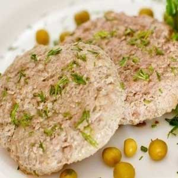
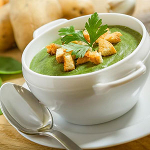

Содержание статьи
1. Главная страница
2. Преимущества ПП
3. Принципы в рамках ПП
4. ПП: меню на неделю
5. Варианты завтраков, обедов и ужинов
6. Советы напоследок
7. Невозможно НЕ похудеть
8. Вредные продукты
9. Полезные советы
|
Правильного Питания: меню на неделю
Питание должно быть разнообразным, и в рамках данной системы у вас есть огромное количество вариантов. Вот, например:
рацион диеты для ленивых
- Завтраки – овсянка, пшенка, гречка, рис на воде или молоке с орехами и сухофруктами;бутерброд из цз хлеба с кур. грудкой, помидором, зеленью и сыром, стакан кефира; омлет из белков и салат из фруктов; творог с фруктами, сметаной и джемом.
- Обеды – овощная лазанья; вегетарианская пицца; гуляш из говядины и пюре; крем-суп из овощей и риса.
- Ужины — туш. овощи и отвар. кур. филе; творожн. запеканка и салат из овощей; морепродукты с рисом; отвар. говядина и овощи; омлет с овощами.
И, конечно же, варианты перекусов: кефир с ложкой меда; овсяноблин; яблоко и кусочек горького шоколада; домашнее овсяное печенье; хлебцы с творогом и зеленью; сухофрукты и орехи.
А теперь несколько рецептов, которые помогут вам научиться готовить и питаться правильно.

- Рисовая каша с тыквой.
Просто возьмите 200 гр. риса, лучше коричневого, 100 гр. тыквы, воду и молоко. Тыкву необходимо нарезать кубиками, сложить в кастрюлю и залить молоком и водой, положить туда же промытый рис. Все это варится до тех пор, пока рис не будет готов.
- Творожная запеканка.

Вам нужно взбить блендером 250 гр. нежирного творога, затем добавить к нему молоко (100 мл), щепотку сахара (можно и без него), ваниль, яичные желтки – 2 шт. Все это должно превратиться в однородную массу. Белки необходимо взбивать отдельно, чтобы они стали воздушными. Теперь добавьте их в творожную массу и выложите ее в форму, которая уже смазана сливочн. маслом. Всего полчаса в духовке и вкусный завтрак готов.
- Котлеты на пару. 
А это отличный вариант обеда или ужина в компании с овощами или гречкой. Берете кур. филе (полкилограмма), измельчаете его в блендере. Предварительно замочите 2 ломтика цельнозерн. хлеба в молоке (3 столовых ложки). Смешайте филе, хлеб со взбитым яйцом, луковицей, перемолотой в блендере, солью и зеленью. Добавьте овсяную муку (можно и без нее). Сформируйте котлетки и уложите их в пароварку на полчаса.
- Суп-пюре из шпината с брокколи
Проварите брокколи в фильтрованной воде до полного
 приготовления. Бульон сливать не нужно. Нашинкуйте репчатый лук в произвольной форме, мелко порубите шпинат.
В ёмкости соедините брокколи с подготовленными овощами. Учитывая правильное питание, нужно превратить продукты в однородную кашицу с помощью блендера. Такой суп полезен для похудения. Примешайте состав к бульону, влейте сливки.
Перемешайте компоненты. Можете добавить различные специи и пряности по вкусу в небольшом количестве. В домашних условиях проварите суп порядка 5 минут. Блюдо станет отличным дополнением к рациону для женщин за 30
|